رصد زلزالي نجمي للدوران التفاضلي مع خط العرض في 13 نجوم شبيهة بالشمس
يعتقد أن الطبقات الخارجية ذات الدوران التفاضلي في النجوم تؤدي دورا في دفع نشاطها المغناطيسي، غير أن الآليات الأساسية التي تولد الدوران التفاضلي وتحافظ عليه لا تزال غير مفهومة جيدا. نبلغ عن قياس الدوران التفاضلي مع خط العرض في مناطق الحمل الحراري في 40 نجوم شبيهة بالشمس باستخدام علم الزلازل النجمية. وفي أكثر الرصود دلالة إحصائية، تدور خطوط استواء النجوم بسرعة تقارب ضعفي سرعة دوران خطوط عرضها المتوسطة. أما القص العرضي المستنتج من علم الزلازل النجمية فهو أكبر بكثير من تنبؤات المحاكاة العددية.
كان تحليل التذبذبات الصوتية المرئية على سطح الشمس باستخدام علم الزلازل الشمسية حاسما في تقييد شكل دورانها. وقد كشف علم الزلازل الشمسية أن معدل دوران منطقة الحمل الحراري في الشمس يتناقص مع خط العرض [1, 2]. ولهذا الدوران التفاضلي مع خط العرض مقدار يساوي من المعدل المتوسط من خط الاستواء إلى خطوط العرض المتوسطة (خط عرض )، و بين خط الاستواء والقطبين. وعند قاعدة منطقة الحمل الحراري، تنتقل الشمس إلى دوران كجسم صلب. ولا تزال كيفية نشوء هذا الشكل الدوراني واستمراره غير مفهومة جيدا. ومع ذلك، يرجح أن يؤدي الدوران التفاضلي دورا في إدامة المجال المغناطيسي الشمسي عبر آلية دينامو [3, 4, 5].
حتى الآن، لا يعرف إلا القليل عن الدوران التفاضلي مع خط العرض في النجوم الأخرى، والطرائق التقليدية لدراسته حساسة أساسا للطبقات القريبة من السطح. وتعتمد معظم الدراسات على التغيرات الضوئية الناجمة عن البقع النجمية عند خطوط عرض مختلفة [6]، أو تستخدم التصوير الدوبلري لتتبع السمات المغناطيسية على السطح وهجرتها في خط العرض [7, 8]. وهناك نهج آخر يتضمن دراسة تحويل فورييه لمقاطع الخطوط الطيفية [9, 10].
يوفر علم الزلازل النجمية فرصة لسبر الدوران داخل النجوم، بما في ذلك النجوم النابضة الشبيهة بالشمس [11, 12, 13]، لأنه يدرس الترددات الرنينية للموجات داخل جسم النجم. ومن بينها موجات صوتية تنتقل على أعماق مختلفة ولها حساسية متباينة للدوران بحسب خط العرض. ويمكن استخدام هذه الموجات الصوتية لاستنتاج الدوران الداخلي للنجم في كل من نصف القطر وخط العرض [14, 15, 16, 17].
وفرت المركبة الفضائية التابعة لناسا Kepler سلاسل زمنية ضوئية عالية الدقة وطويلة المدة لكثير من النجوم، وهو أمر ضروري لدراسة الدوران التفاضلي للنجوم الشبيهة بالشمس بعلم الزلازل النجمية.
تدفع تذبذبات النجوم الشبيهة بالشمس الحركة الحملية العشوائية للمادة في الغلاف الخارجي للنجوم. ويحدد كل نمط تذبذب بعدد النغمة الفوقية وبدوال توافقية كروية ذات درجة زاوية ورتبة سمتية . وتظهر الأنماط ذات و نفسيهما، ولكن ذات مختلفة، على هيئة مضاعفات تضم مكونات. ويوفر انقسام الأنماط في المضاعف معلومات عن شكل الدوران وعن العمليات الفيزيائية العاملة داخل النجم (مثل التدفقات والبنية الداخلية وقوى المد).
إن وسيلة فعالة لكمية أثر الدوران في الترددات المنقسمة للموجات الصوتية هي استخدام معاملات كليبش-غوردان a [18]. وقد استعمل هذا التفكيك على نطاق واسع في علم الزلازل الشمسية، لكنه لم يستعمل في تحليل النجوم الأخرى. وبالنسبة إلى النجوم غير الشمس، لا يمكن رصد إلا الأنماط منخفضة الدرجة ()، ومن ثم لا يمكن تحديد إلا المعاملات و و. ويمثل المعامل متوسطا لمعدل الدوران. ويرتبط المعامل باللاتكروية [19]، في حين أن مقياس للدوران التفاضلي مع خط العرض [16]. ويكون المعامل موجبا عندما يدور القطب أبطأ من خط الاستواء، أي إذا أظهر النجم شكلا دورانيا شبيها بالشمس (الشكل S1). وبالعكس، يكون سالبا في أشكال الدوران المضاد للشمس. وتميل المحاكاة إلى إظهار أن الدوران السريع يسبب دورانا شبيها بالشمس، بينما تؤدي معدلات الدوران الأبطأ إلى دوران مضاد للشمس [20, 21, 22]، مع أن محاكاة وجدت دورانا مضادا للشمس عند معدلات دوران شمسية [21, 22]. وهذا غير متوافق بوضوح مع الرصود الشمسية، وتلزم قيود من نجوم أخرى لحل هذه المسألة.
تظهر النبضات على هيئة مقاطع لورنتزية في طيف القدرة للسلاسل الزمنية الضوئية للنجم [23]. ويجرى تحليل النبضات بملاءمة نموذج لطيف القدرة باستخدام تقنية أخذ عينات MCMC [11]. وتقاس مساهمة في ترددات الأنماط بسهولة، لكن القيمة المطلقة لـ أصغر بنحو رتبتين من ، لذلك لا يمكن قياسها إلا باستخدام رصود تمتد لسنوات متعددة من أدوات فضائية مثل Kepler.
ننجز قياسا مشتركا للمعاملين و لـ40 نجما ذات كتل بين و، رصدت ضمن عينة Kepler LEGACY [24, 25]. وبتكامل دوال كثافة الاحتمال لـ المحددة من ملاءمة أطياف القدرة، نحسب دلالة الكشف لكل من الدوران التفاضلي العرضي الشبيه بالشمس أو المضاد للشمس (الشكل 1 والجدول S1). وبتطبيق عتبة كشف عند احتمال (أي باستبعاد ذات دلالة كشف لتوزيع غاوسي)، نجد أن أيا من النجوم لا يظهر دورانا مضادا للشمس على نحو لا لبس فيه، في حين أن (13 نجوما) تظهر دورانا شبيها بالشمس بدلالة معتبرة. وتمتلك خمسة نجوم احتمال كشف يزيد على (أو دلالة ). وقد يعود فائض الدوارات الشبيهة بالشمس إلى قيد رصدي. فالدوران التفاضلي المضاد للشمس متوقع نظريا [20, 26] في الدوارات البطيئة، التي يصعب فيها قياس و. وتتكون عينتنا في الغالب من دوارات سريعة، ومن ثم قد نكون حساسين فقط للنجوم ذات الأشكال الدورانية الشبيهة بالشمس. وتملك أكثر كشوفنا دلالة إحصائية معدلات دوران مرتفعة نسبيا مقارنة بتلك الواقعة دون عتبة الكشف.
عدد روسبي مؤشر على تأثير الدوران في مائع مقارنة بالحركة الحملية. وتتنبأ النظرية الحالية [20] بأن الدوارات الشبيهة بالشمس ينبغي أن تمتلك عدد روسبي أقل من الواحد. وبالنسبة إلى معظم كشوفنا ذات الدلالة، نجد عدد روسبي أقل من (انظر الشكل S2).
نسعى الآن إلى تقدير القص الدوراني بين خط الاستواء وخطوط العرض الأعلى. ولهذا نختار نجمين ممثلين (HD 173701 وHD 187160) من حيث و والبنية الداخلية (أي سمك منطقة الحمل الحراري). وتعرض أطياف قدرتهما في الشكل S3-4 مع النموذج الأفضل ملاءمة. HD 173701 قزم بارد من النمط الطيفي G8 (الشمس من النمط الطيفي G2)، بكتلة وعمر غيغاسنة [24]. ومن المعروف أنه نشط جدا [27]، مع تغيرات غير منتظمة على مقاييس زمنية تمتد من 8 إلى 40 أيام، وعلى الأرجح تسببها البقع النجمية. وتشير دالة كثافة الاحتمال المستنتجة من الملاءمة إلى أن nHz و nHz (الشكل S5). أما HD 187160 فهو من النمط الطيفي F9 وله كتلة وعمر يبلغان و غيغاسنة. وبذلك، يشبه HD 187160 نسخة أصغر عمرا من الشمس. وله قدر ظاهري ورفيق ثنائي طيفي خافت وبارد قدره [28]. ومتوسط فترة الدوران الداخلية هو أيام ( nHz). ويظهر منحنى الضوء لـHD 187160 تغيرا على مقياسين زمنيين متميزين، أحدهما عند أيام والآخر عند أيام. ونعزو هذا التغير إلى بقع نجمية على سطحي HD 187160 ورفيقه الأخفت غير المتفاعل، على التوالي. نقيس nHz (الشكل S6).
قيمنا الأخطاء المنهجية المحتملة المرتبطة بمنهجية ملاءمة الأنماط باستخدام أطياف قدرة محاكاة لكل من HD 173701 وHD 187160 [23]. وهذه الأخطاء المنهجية صغيرة، ما يعني أن في كلتا الحالتين موجب باحتمال أعلى من . ويؤكد ذلك أن لهذين النجمين أقطابا تدور أبطأ من خط الاستواء.
للحصول على شكل الدوران مع خط العرض نستخدم عكسا لمعاملات [16]. وبما أننا لا نقيس إلا و، فنحن مقيدون هنا بنموذج دوران ذي معلمتين. ونفترض شكلا دورانيا شبيها بالشمس في منطقة الحمل الحراري، حيث إن هو متمم خط العرض (الزاوية المتممة لخط العرض بحيث يكون هو القطب و هو خط الاستواء). ويعطى متوسط معدل الدوران الداخلي بـ، بينما يقيس الحد في التباين في الدوران (القص العرضي) من خط الاستواء إلى القطب في منطقة الحمل الحراري. وفي المعادلة، يمثل و معدلَي دوران القطب وخط الاستواء، على التوالي. وتمتد منطقة الحمل الحراري من السطح نزولا إلى في HD 173701 وإلى في HD 187160، حيث إن هو نصف قطر النجم. ونظرا إلى الدوران السريع نسبيا لـHD 187160 ، فقد فحص بحثا عن تغيرات محتملة في مع النغمة الفوقية (الشكل S7). ولم نجد دليلا على تغير ذي دلالة. وتشير دراسات الدوران التفاضلي الشعاعي للنجوم منخفضة الكتلة على النسق الرئيس إلى أن التغير في ينبغي ألا يتجاوز 30% [29]، ولذلك لا نتوقع أن يؤثر ذلك في العكس.
تحتوي الجداول S2 وS3 على الخصائص الأساسية للنماذج النجمية المفترضة للعكس ونتائج العكس، على التوالي. ويعرض الشكل 2 أشكال الدوران ثنائية الأبعاد وكثافة احتمال معدل الدوران عند خطوط عرض مختلفة لكلا النجمين. وبالبناء، يكون الشكل متماثلا حول خط الاستواء وحول محور الدوران، ولذلك لا يعرض إلا ربع واحد. ويطابق معدل الدوران في الداخل معدل دوران الغلاف عند خط عرض ()، وذلك بسبب بنية شكل الدوران ذي المنطقتين. وكما تبين كثافة احتمال شكل الدوران، يزداد عدم اليقين في معدل الدوران زيادة كبيرة باتجاه القطبين، بعد قيمة تقارب خط عرض . وعند خطوط العرض العالية تصبح الأنماط أقل حساسية بكثير للدوران، ومن ثم تعطي معلومات أقل. ويفرض هذا الحد عدم وجود أنماط مرئية ذات درجة زاوية أعلى من في الطيف. ونجد أن كلا من HD 173701 وHD 187160 يظهر قصا عرضيا من خط الاستواء إلى خط عرض ، وهو أكبر بنحو 5 مرات من قص الشمس.
كما تشير المحاكاة العددية، فإن الدوران السريع لـHD 187160 يعني أن الصورة الدالية لشكل دورانه قد لا تكون شبيهة بالشمس [23]. وقد نظرنا في هذه الإمكانية لـHD 187160 (الشكل S8) ووجدنا أن أشكال الدوران البديلة لها قص عرضي أكبر من الشكل الدوراني الشبيه بالشمس. ومع ذلك، يبين حساب الدليل البايزي (اللازم لتحديد جودة الملاءمة) أن الشكل الشبيه بالشمس هو النموذج الأرجح.
بسبب فقدان الزخم الزاوي، كما يحدث بالكبح المغناطيسي، يتوقع أن يتباطأ دوران النجم مع عمره [1]. وتظهر علاقة العمر بالدوران هذه في بياناتنا: إذ يبين الشكل 3A,B مقدار بدلالة العمر المعطى من النماذج النجمية [25].
كما يبين الشكل 3C، فإن القص العرضي بين خط الاستواء وخط العرض المتوسط للمجموعة الفرعية المؤلفة من 13 نجما ذات كشوف دالة هو ، وإن كان بتشتت كبير. ويمثل HD 173701 وHD 187160 هذه المجموعة، بدوران تفاضلي قدره . ولدى الشمس عامل قص أقل بكثير من المجموعة المدروسة. ويزيد الفرق على من تشتت المجموعة.
يشكل هذا القص الكبير غير المتوقع تحديا للنماذج النظرية. ويؤدي التوازن بين نقل الزخم الزاوي (بسبب اللاتناحي في الجريان المضطرب) والجريانات صغيرة المقياس، التي تعمل كلزوجة مضطربة معززة، دورا مهيمنا في تنظيم القص العرضي [30]. ويشير القص الكبير الذي نجده إلى لاتناح كبير مقابل في الاضطراب، مما يؤدي إلى نقل فعال للزخم الزاوي وكبت اللزوجة المضطربة. وفي منطقة حمل حراري نجمية نموذجية، تؤثر اللاتناحية المضطربة المدفوعة بالدوران تأثيرا كبيرا في الجريانات واسعة النطاق. ومن ثم، فإن نقل الزخم الزاوي المعزز واللزوجة المضطربة المتناقصة يضخمان الجريانات واسعة النطاق ويكبتان الجريانات صغيرة النطاق. وقد يسبب ذلك دينامو صغير النطاق بالغ الكفاءة، تكبت فيه الجريانات صغيرة النطاق [31]. إضافة إلى ذلك، تميل المجالات المغناطيسية واسعة النطاق إلى تقليل القص عبر قوة لورنتز [32]. غير أن نتائجنا تشير إلى أن تغذية قوة لورنتز الراجعة غير فعالة في النجوم التي درسناها. ومن ثم، يرجح أن ينقل المجال المغناطيسي واسع النطاق بكفاءة إلى المناطق الأعمق من النجم التي يتوقع فيها دوران صلب. ولهذا، يعد الضخ المغناطيسي آلية مرشحة [33].
References
- [1] M. J. Thompson, J. Christensen-Dalsgaard, M. S. Miesch, J. Toomre, Annu. Rev. Astron. Astrophys. 41, 599 (2003).
- [2] J. Schou, et al., Astrophys. J. 505, 390 (1998).
- [3] P. Charbonneau, Living Reviews in Solar Physics 7, 3 (2010).
- [4] M. Ossendrijver, Astron. Astrophys. Rev. 11, 287 (2003).
- [5] E. N. Parker, Astrophys. J. 122, 293 (1955).
- [6] K. Oláh, et al., Astron. Astrophys. 501, 703 (2009).
- [7] J. R. Barnes, et al., Mon. Not. R. Astron. Soc. 357, L1 (2005).
- [8] J.-F. Donati, A. Collier Cameron, Mon. Not. R. Astron. Soc. 291, 1 (1997).
- [9] A. Reiners, J. H. M. M. Schmitt, M. Kürster, Astron. Astrophys. 376, L13 (2001).
- [10] D. F. Gray, Astrophys. J. 211, 198 (1977).
- [11] O. Benomar, M. Takata, H. Shibahashi, T. Ceillier, R. A. García, Mon. Not. R. Astron. Soc. 452, 2654 (2015).
- [12] L. Gizon, et al., Proceedings of the National Academy of Sciences of the USA 110, 13267 (2013).
- [13] T. Appourchaux, et al., Astron. Astrophys. 488, 705 (2008).
- [14] M. N. Lund, et al., Astron. Astrophys. 570, A54 (2014).
- [15] C. Aerts, J. Christensen-Dalsgaard, D. Kurtz, Asteroseismology (Springer Science, 2010), first edn.
- [16] L. Gizon, S. K. Solanki, Sol. Phys. 220, 169 (2004).
- [17] L. Gizon, S. K. Solanki, Astrophys. J. 589, 1009 (2003).
- [18] J. Schou, J. Christensen-Dalsgaard, M. J. Thompson, Astrophys. J. 433, 389 (1994).
- [19] L. Gizon, et al., Science Advances 2, e1601777 (2016).
- [20] T. Gastine, J. Wicht, J. M. Aurnou, Icarus 225, 156 (2013).
- [21] H. Hotta, M. Rempel, T. Yokoyama, Astrophys. J. 798, 51 (2015).
- [22] Y. Fan, F. Fang, Astrophys. J. 789, 35 (2014).
- [23] Materials and methods are available as supplementary materials at the Science website.
- [24] M. N. Lund, et al., Astrophys. J. 835, 172 (2017).
- [25] V. Silva Aguirre, et al., Astrophys. J. 835, 173 (2017).
- [26] N. A. Featherstone, M. S. Miesch, Astrophys. J. 804, 67 (2015).
- [27] R. Kiefer, A. Schad, G. Davies, M. Roth, Astron. Astrophys. 598, A77 (2017).
- [28] B. D. Mason, G. L. Wycoff, W. I. Hartkopf, G. G. Douglass, C. E. Worley, Astron. J. 122, 3466 (2001).
- [29] M. B. Nielsen, H. Schunker, L. Gizon, J. Schou, W. H. Ball, Astron. Astrophys. 603, A6 (2017).
- [30] H. Hotta, M. Rempel, T. Yokoyama, Science 351, 1427 (2016).
- [31] M. Rempel, Astrophys. J. 789, 132 (2014).
- [32] B. B. Karak, et al., Astron. Astrophys. 576, A26 (2015).
- [33] N. H. Brummell, T. L. Clune, J. Toomre, Astrophys. J. 570, 825 (2002).
- [34] T. R. White, et al., Astrophys. J. 751, L36 (2012).
- [35] O. Benomar, T. Appourchaux, F. Baudin, Astron. Astrophys. 506, 15 (2009).
- [36] O. L. Creevey, et al., Astron. Astrophys. 601, A67 (2017).
- [37] R. Handberg, M. N. Lund, Mon. Not. R. Astron. Soc. 445, 2698 (2014).
- [38] S. Pires, et al., Astron. Astrophys. 574, A18 (2015).
- [39] E. R. Anderson, T. L. Duvall, Jr., S. M. Jefferies, Astrophys. J. 364, 699 (1990).
- [40] E. Corsaro, J. De Ridder, Astron. Astrophys. 571, A71 (2014).
- [41] T. Appourchaux, L. Gizon, M.-C. Rabello-Soares, Astron. Astrophys. Suppl. Ser. 132, 107 (1998).
- [42] T. Stahn, L. Gizon, Sol. Phys. 251, 31 (2008).
- [43] N. Metropolis, A. Rosenbluth, M. Rosenbluth, J. Chem. Phys 21, 188 (1953).
- [44] W. Hastings, Biometrika 57, 97 (1970).
- [45] D. Earl, M. W. Deem, Phys. Chem. Chem. Phys. 7, 3910 (2005).
- [46] Y. F. Atchadé, Methodology and Computing in Applied Probability 8, 235 (2006).
- [47] P. Heidelberger, P. D. Welch, Operations Research 31, 1109 (1983).
- [48] P. Heidelberger, P. D. Welch, Commun. ACM 24, 233 (1981).
- [49] J. Geweke, In Bayesian statistics (University Press, 1992), pp. 169–193.
- [50] M. Plummer, N. Best, K. Cowles, K. Vines, R News 6, 7 (2006).
- [51] M. J. Goupil, R. Samadi, J. Lochard, W. A. Dziembowski, A. Pamyatnykh, Stellar Structure and Habitable Planet Finding, F. Favata, S. Aigrain, A. Wilson, eds. (2004), vol. 538 of ESA Special Publication, pp. 133–140.
- [52] W. A. Dziembowski, P. R. Goode, Astrophys. J. 376, 782 (1991).
- [53] H. Kjeldsen, et al., Structure and Dynamics of the Interior of the Sun and Sun-like Stars, S. Korzennik, ed. (1998), vol. 418 of ESA Special Publication, p. 385.
- [54] J. Christensen-Dalsgaard, W. A. Dziembowski, NATO Advanced Science Institutes (ASI) Series C, C. Ibanoglu, ed. (2000), vol. 544 of NATO Advanced Science Institutes (ASI) Series C, p. 1.
- [55] T. Duvall, J. Harvey, NATO ASI Series C: Mathematical and Physical Sciences 169, 105 (1986).
- [56] T. M. Brown, et al., Astrophys. J. 343, 526 (1989).
- [57] M. H. Ritzwoller, E. M. Lavely, Astrophys. J. 369, 557 (1991).
- [58] M. B. Nielsen, L. Gizon, H. Schunker, J. Schou, Astron. Astrophys. 568, L12 (2014).
- [59] T. R. White, et al., Astron. Astrophys. 601, A82 (2017).
- [60] R. A. García, et al., Journal of Physics Conference Series 271, 012049 (2011).
- [61] T. Gastine, R. K. Yadav, J. Morin, A. Reiners, J. Wicht, Mon. Not. R. Astron. Soc. 438, L76 (2014).
- [62] H. Jeffreys, Theory of Probability (Oxford, Oxford, England, 1961), third edn.
- [63] F. P. Pijpers, Astron. Astrophys. 326, 1235 (1997).
- [64] A. Eff-Darwich, S. G. Korzennik, Sol. Phys. 287, 43 (2013).
- [65] D. W. Kurtz, et al., Mon. Not. R. Astron. Soc. 444, 102 (2014).
- [66] H. Saio, et al., Mon. Not. R. Astron. Soc. 447, 3264 (2015).
- [67] J. Christensen-Dalsgaard, Mon. Not. R. Astron. Soc. 199, 735 (1982).
- [68] J. Christensen-Dalsgaard, Astrophys. Space Sci. 316, 13 (2008a).
- [69] J. Christensen-Dalsgaard, Astrophys. Space Sci. 316, 113 (2008b).
- [70] M. Küker, G. Rüdiger, L. L. Kitchatinov, Astron. Astrophys. 530, A48 (2011).
- [71] H. Hotta, T. Yokoyama, Astrophys. J. 740, 12 (2011).
- [72] B. P. Brown, M. K. Browning, A. S. Brun, M. S. Miesch, J. Toomre, Astrophys. J. 689, 1354 (2008).
- [73] M. Rempel, Astrophys. J. 622, 1320 (2005).
- [74] A. S. Brun, et al., The Astrophysical Journal 836, 192 (2017).
- [75] J. Christensen-Dalsgaard, et al., Science 272, 1286 (1996).
شكر وتقدير: يشكر المؤلفون T.R. White وS. Kamiaka على مناقشاتهم المفيدة.
التمويل: يدعم هذا العمل منحة معهد NYUAD رقم G1502. ونقر بتمويل البحث من المركز الألماني للفضاء والطيران (المنحة 50OO1501) وجمعية ماكس بلانك (PLATO Science). ويقدم تمويل مركز الفيزياء الفلكية النجمية من مؤسسة الأبحاث الوطنية الدنماركية (المنحة DNRF106). ودعم البحث مشروع ASTERISK (ASTERoseismic Investigations with SONG and Kepler) الممول من مجلس البحوث الأوروبي (اتفاقية المنحة رقم: 267864). ويقدم تمويل مهمة Kepler من مديرية البعثات العلمية في NASA.
مساهمات المؤلفين: أجرى O.B. التحليلات الزلزالية وقاد كتابة المخطوط. وأجرى M.B. العكس الزلزالي. وحلل M.B.N. تغير منحنيات الضوء. وناقش جميع المؤلفين النتائج وأسهموا في أقسام من المخطوط.
تضارب المصالح: لا يوجد.
إتاحة البيانات والمواد: تتضمن هذه الورقة بيانات جمعتها مهمة Kepler، وقدمها مركز عمليات علوم الزلازل النجمية Kepler Asteroseismic Science Operations Center (KASOC)، وهي متاحة مجانا عند https://doi.org/10.7910/DVN/8SK6OL. وتتوفر شفرة التحليل عند https://github.com/OthmanB/TAMCMC-C. وتوجد تفاصيل إضافية عن البيانات في الجدول S4.
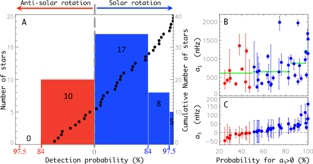
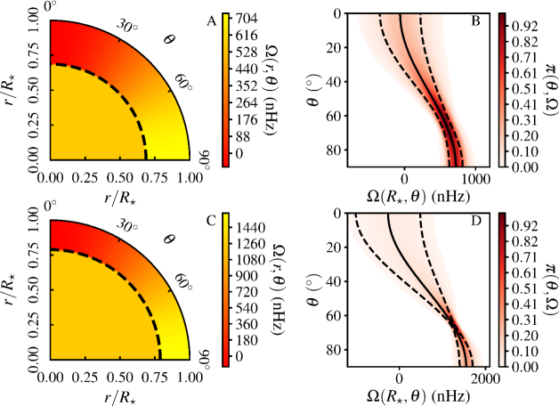
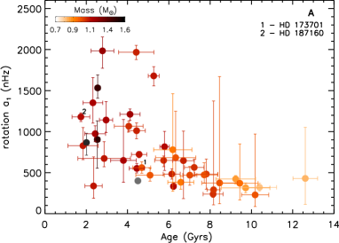
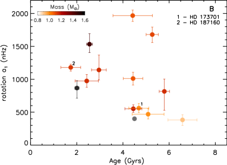
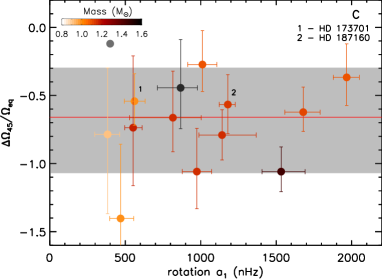
المواد التكميلية
المواد والطرائق
الأشكال S1-S8
الجداول S1-S4
المراجع (34-75)
المواد التكميلية: رصد زلزالي نجمي للدوران التفاضلي مع خط العرض في 13 نجوم شبيهة بالشمس
المواد والطرائق
اختيار الأهداف وتحضير طيف القدرة
إن مجموعة النجوم التي تحلل في الدراسة الحالية هي مجموعة فرعية من نجوم LEGACY [24]. وهي تقابل نجوما لها سنة واحدة على الأقل من الرصد المتواصل وتملك أعلى نسبة إشارة إلى ضجيج بين النجوم التي رصدتها الأداة الفضائية Kepler. ومن محاكاة استخدمت طرائق مماثلة لتلك الواردة في قسم تقييم الأخطاء المنهجية من هذه المادة التكميلية، وجدنا أن هذه الشروط ضرورية لكنها غير كافية لقياس المعامل بدقة وصحة. والشرط الحرج الرئيس هو أن أنماط و يجب أن تكون مفصولة جيدا كي لا يحدث تداخل بين الأنماط. وهذا يستبعد أكثر نجوم عينات LEGACY سخونة، التي يمثل تحديد أنماطها مشكلة [34, 35, 13]. وتمتلك النجوم المحللة البالغ عددها 40 درجات حرارة فعالة تقارب المجال بين 5250K و6600K، ومعدنيات بين -0.7 و0.4 [25, 36]. ومع ذلك، هناك تمثيل زائد للنجوم ذات درجات الحرارة الأعلى والمعدنية الأخفض من الشمس.
تبين أن تحضير منحنى الضوء وطيف القدرة مهم، إذ يجب اتباع خطوات دقيقة عدة لكشف النبضات النجمية الخافتة. وقد تؤدي الإجراءات المختلفة إلى أطياف قدرة مختلفة قليلا. وهنا أجرينا تحليل أطياف القدرة الموزونة (حيث الوزن هو لايقين التدفق) وغير الموزونة[37] التي يوفرها خط معالجة KASOC (kasoc.phys.au.dk). وتحضر هذه الأطياف باستخدام بيانات البكسلات مع قناع محدد ملائم لأهداف Kepler الزلزالية النجمية واتباع إجراء [37]. ولم تجر تعديلات إضافية، بحيث تكون هذه البيانات هي نفسها المستخدمة في [24, 25] لاشتقاق المعلمات الأساسية الرئيسة لنجوم LEGACY. إضافة إلى ذلك، بالنسبة إلى HD 73701 وHD 187160، حللت أطياف قدرة تستخدم تقنية in-painting [38] لتخفيف الفجوات في السلسلة الزمنية. ووجد أن نتائج معاملي و متفقة ضمن . وتحسب نتائجنا باستخدام الأطياف غير الموزونة.
طريقة ملاءمة طيف القدرة
غالبا ما يستخدم نهج تقدير الاحتمالية العظمى (MLE) لملاءمة أطياف القدرة [39]. غير أنه ملائم غالبا لدالة احتمالية ذات عظمى وحيدة معرفة جيدا. وبدلا من ذلك نستخدم نهجا بايزيا مقترنا بخوارزمية أخذ عينات مونت كارلو بسلاسل ماركوف (MCMC). وتعرف هذه الطريقة بأنها أكثر ملاءمة لقياس التأثيرات الدقيقة في البيانات، لأنها أقل حساسية للتقارب نحو القيم العظمى المحلية [35, 40]. علاوة على ذلك، غالبا ما توفر طريقة MCMC تقديرات أكثر تحفظا ومتانة للايقينات، إذ تعيد دوال توزيع الاحتمال المهمشة للمعلمات.
في النهج البايزي، يكون المعيار الإحصائي هو دالة كثافة الاحتمال البعدية ، المبنية باستخدام الاحتمالات الشرطية ومبرهنة بايز،
| (S1) |
هنا، هو احتمال رصد البيانات معطى نموذج أساسي ، حيث يوصف النموذج بالمعلمات . كما أن هو المعرفة القبلية بمعلمات الملاءمة.
إحصاء الضجيج لكثافة القدرة الطيفية للحاويات المستقلة عند تردد معين هو توزيع بدرجتي حرية (وهو في الواقع توزيع أسي)، مما يعطي الاحتمالية،
| (S2) |
حيث يكون هو النموذج. لاحظ أن النموذج الفيزيائي الذي يصف الرصود المتقطعة متصل. ومع ذلك، وبالاشتراط على ، تكون الرصود مستقلة أساسا. ويبرر افتراض الاستقلال أيضا عامل التشغيل العالي جدا () للسلاسل الزمنية من Kepler التي نستخدمها. وهذا يعني أن الأسماء المستعارة وارتباطات الحاويات في أطياف القدرة بسبب الفجوات في السلسلة الزمنية مهملة. وقد تحقق ذلك لرصود CoRoT الفضائية [13]، وهي مهمة ذات عامل تشغيل 90%. علاوة على ذلك، بين أن تدهور عامل التشغيل يوسع لايقين معلمات التردد، الذي يبقى دائما أعلى من حد Cramér-Rao (للسلسلة الزمنية من دون فجوات)، لكنه يقترب منه ضمن جزء من المئة عند عامل تشغيل 95% [41, 42]. ولذلك فإن آثار الفجوات في طيف القدرة مهملة. ويستند النموذج إلى مجموع دالة خلفية ضجيج ، ومجموع من المقاطع اللورنتزية [35]،
| (S3) |
هنا، يمثل و و ارتفاع الأنماط وعرضها وترددها، على التوالي. وكما يتضح من المعادلة S9، يوسم بدلالة و و. إضافة إلى ذلك، توصف خلفية الضجيج باستخدام مقطع شبيه بهارفي وضجيج أبيض، كما في[35, 13]. وتشكل الكميات المذكورة فضاء المعلمات ذا بعد يتراوح من 50 إلى 100، تبعا لعدد أنماط النبض المقاسة. ورغم أن فضاء المعلمات يبدو كبيرا، لاحظ أن الرصود تحتوي عادة على نقطة بيانات، وهو عدد يفوق كثيرا عدد المعلمات. علاوة على ذلك، يحد استخدام القبلية من الحجم المأخوذ منه العينات.
أخذ عينات MCMC
أجري تحليل طيف القدرة باستخدام خوارزمية MCMC، مبنية على مخطط Metropolis-Hasting مع التقسية المتوازية [43, 44, 45]. وثبت عدد السلاسل المتوازية عند ، مع توزيع درجات حرارة يتبع قانونا هندسيا ، مع تثبيت بحيث تكون درجة الحرارة العظمى (و). واكتسب مجموع قدره 2 مليون عينة (لكل سلسلة)، بعد طور احتراق مقداره 100 000 عينة وطور تدريب مقداره 700 000 عينة. ويضمن ذلك بلوغ معدل قبول قريب من 0.234 يبقى مستقرا خلال طور الاكتساب (ضمن ). ويستخدم طور التدريب خوارزمية تكيفية مبنية على [46] لتحسين مصفوفة التغاير لدالة كثافة احتمال الاقتراح (الغاوسية). وتوجد تفاصيل أكثر في [35]، والتنفيذ بلغة C++ متاح عند https://github.com/OthmanB/TAMCMC-C. ونتحقق من بلوغ التوزيع الهدف باستخدام تشخيصات مختلفة. أولا، نقارن النتائج من النصف الأول من العينات بالمجموعة الكاملة. ولم نر تغيرات تتجاوز في المئة في المؤشرات الإحصائية (الوسيط ومجال الثقة). كما يجرى فحص بصري لدوال كثافة الاحتمال. ثانيا، نستخدم اختبار Heidelberger وWelch [47, 48] واختبار Geweke [49]. وهذه اختبارات تقارب كمية تطبق على كل معلمة. واستخدمنا تنفيذها في R من مكتبة CODA [50]، ووحدة بايثون py-coda (https://github.com/surhudm/py-coda). واستخدمت المعلمات الافتراضية. ووجدنا أن عينة مطلوبة لاجتياز اختباري التقارب لكافة معلمات نموذجنا الطيفي. وهذا أقل من عدد العينات الذي نجريه لكل نجم، مما يضمن أننا نأخذ عينات من التوزيعات الهدف على نحو صحيح.
أثر الدوران في ترددات النبض
يرفع دوران النجم انحلال تردد الأنماط غير الشعاعية (، )، فينتج مضاعفا من أنماط ذات رتب سمتية .
بالنسبة إلى الدوارات البطيئة والمعتدلة (فترات دوران أطول من بضعة أيام)، يكون الدوران اضطرابا صغيرا نسبة إلى ترددات النبض المتناظرة كرويا ،
| (S4) |
الاضطراب هو الانقسام الدوراني المتناظر [51]، ويمثل آثار الدوران ذات الرتب الأعلى (مثل اللاتكروية).
إلى الرتبة الأولى، يكون الاضطراب في التردد الناتج عن الدوران هو
| (S5) |
هنا، هو نصف قطر النجم، وتحدد النواة [18, 15] حساسية النمط للدوران عند النقطة الشعاعية ومتمم خط العرض .
ننظر هنا أيضا في الاضطراب من الرتبة الثانية الذي يأخذ لاتكروية النجم في الحسبان. تشوه القوة الطاردة المركزية تجاويف أنماط التذبذب، فتحدث اضطرابا إضافيا في التردد. ويتناسب هذا الحد مع ، حيث إن هو ثابت الجاذبية و هو الكثافة المتوسطة للنجم.
وقد تعدل اضطرابات أخرى أكثر تعقيدا، مثل مجال مغناطيسي واسع النطاق [52]، شكل تجاويف الأنماط أيضا. وبتسمية حدود الاضطراب المختلفة هذه ، يمكن التعبير عن آثار الدوران من الرتبة الثانية في ترددات الأنماط كما يلي،
| (S6) |
مع [53] و [54, 15]. وينبغي إضافة الحد إلى المعادلة S4 للحصول على الاضطراب الكلي الناتج عن الدوران وعن لاتكروية النجم.
عند نمذجة ترددات النبض، ندرس حالات تتضمن الحد الطارد المركزي فقط ونقارنها بحالات يكون فيها . وهذا يمكننا من تقييم ما إذا كانت قوى غير القوة الطاردة المركزية تشوه النجم.
في هذه الدراسة، الهدف النهائي هو حل مسألة عكسية تتمثل في استنتاج شكل الدوران اعتمادا على قياسات . وفي الأيام الأولى لعلم الزلازل الشمسية، استخدم تفكيك معاملات كليبش-غوردان a [55, 56, 57, 18] لوصف الانقسام بدلالة مجموع من معاملات متعددة الحدود . ويربط التفكيك المعاملات الفردية بخصائص الدوران، مثل الدوران التفاضلي.
في رصود Kepler لكل من HD 187160 وHD 173701، لم يكن بالإمكان قياس إلا أنماط بدقة. وهذا يحد عدد معاملات القابلة للقياس إلى و، وهي التي نستخدمها لاحقا في عكسنا لشكل الدوران .
الانقسام المتناظر لأنماط و هو توليفة من معاملات a [16]،
| (S7) | ||||
| (S8) |
ولتحسين متانة التقديرات، نبسط هذه المعادلات بافتراض ، مما يؤدي إلى . وبالنظر إلى نماذج النجوم، استطعنا التحقق من أن يختلف فقط بمقدار عن . وأخيرا، مع ملاحظة أن الاعتماد على لـ (انظر الشكل S7) صعب القياس عمليا [58]، تصبح الترددات المضطربة مقربة الآن بـ
| (S9) |
حيث إن و متوسطان على ؛ مع و. والمعادلة S9 هي العلاقة المستخدمة عند ملاءمة طيف القدرة بالطريقة الموصوفة في قسم طريقة ملاءمة طيف القدرة. لاحظ أن اشتقاق شكل الدوران باستخدام معاملات a المرصودة يتطلب خطوة أخرى، موصوفة في قسم العكس الزلزالي لشكل الدوران من و.
قبلية على
نختار قبلية منتظمة غير معلوماتية على على الصورة،
| (S10) |
ويتوقع أن يكون متوسط معدل الدوران الداخلي دون بضعة أيام، لذلك يثبت عند Hz (الموافق لـ أيام).
قبلية على عندما
هنا، ننظر في الحالة الخاصة لـ. وعندئذ يكون الاضطراب الوحيد في التردد هو ، ولذلك يمكن تقريب على أنه . وتفصل أنماط ذات رتبة شعاعية مجاورة عالية وبالدرجة نفسها بمسافة ترددية شبه منتظمة ، تسمى الفصل الكبير. ويرتبط الفصل الكبير بسرعة الصوت داخل النجم، وهو حساس للكثافة النجمية المتوسطة . وبافتراض أن البنية الشمسية تتدرج مع النجوم الأخرى الشبيهة بالشمس، يمكن ربط الكثافة الشمسية المتوسطة kg m-3 والفاصل الترددي المتوسط لها Hz [60]، بتلك الخاصة بالنجوم الأخرى،
| (S11) |
وهذا يسمح لنا بإعادة صياغة كما يلي،
| (S12) |
مع تعريف .
وعندئذ يعطى الفرق النسبي في نصف القطر بين خط الاستواء والقطب للنجم ببساطة من خلال،
| (S13) |
ومع ملاحظة أن معروف قبليا بخطأ نموذجي لا يتجاوز ، في حين أن مقيد إلى ، يتضح أن المصدر الرئيس للايقين هو . ولذلك نثبت ، وهو ما يكافئ القبلية،
| (S14) |
حيث إن هي دالة دلتا ديراك.
قبلية على عندما
قد تؤثر آليات عدة غير القوة الطاردة المركزية في لاتكروية تجويف النمط، ولذلك تنظر هذه الدراسة أيضا في نماذج ذات . ومع ملاحظة أن يحتوي على كل المعلومات عن اللاتكروية، فإن استراتيجية التحليل الأعم تتمثل في الملاءمة مباشرة لـ. ويمكن بعد ذلك فصل عن الحد الطارد المركزي a posteriori. ويجب أولا اختيار صورة دالية لـ؛ وهنا نستخدم
| (S15) |
حيث يكون معلمة حرة. وبهذا التعبير، يمكن مقارنة مباشرة بمعامل القوة الطاردة المركزية ، بحيث يمكن تحديد وجود قوى إضافية بسهولة.
يبين فحص المعادلة S15 أن اللاتكروية تزحزح غالبا المكون إما إلى تردد أعلى (لنجم مفلطح) أو إلى تردد أدنى (لنجم متطاول)، مقارنة بترددات نجم متناظر كرويا. ويتيح لنا النظر في المعادلة S9 تعريف حد على ،
| (S16) |
مع كمعلمة قابلة للضبط. وعندما ، يكون . وهذه الإمكانية متطرفة إلى حد ما وغير متوقعة في الدوارات البطيئة، التي تكون فيها اللاتكروية الناجمة عن القوة الطاردة المركزية . وعند الكثافة الشمسية ومع ترددات نبض مماثلة للشمس، يمثل ذلك على الأكثر إزاحة ترددية للمكون المناطقي قدرها 100 nHz. ويجب مقارنة ذلك بانقسام دوراني قدره nHz لنجم شبيه بالشمس يدور في بضعة أيام. وفي تحليلنا ننظر بدلا من ذلك في . ومن الواضح أن عظمى () وصغرى () يجب أن تكونا معروفتين قبليا لاستخدام هذا الشرط. وتحصلان من ملاءمة طيف قدرة النجم مع تثبيت و. لاحظ أن بحيث إن القيمة العظمى لـ، مفترضة فيما يلي. وأخيرا، فإن وضع قبلية منتظمة على يعطي
| (S17) |
مع .
قبلية على
بما أن سعة الدوران التفاضلي مع خط العرض يتوقع أن تمثل جزءا فقط من متوسط معدل الدوران، يمكن اعتبار . علاوة على ذلك، للشمس بوضوح دوران أسرع عند خط الاستواء منه عند القطب (وهو ما يقابل عموما )، لكن السيناريو المعاكس (حالة ذات ) لا يمكن استبعاده قبليا في نجوم أخرى [61]. ولذلك يجب أن تأخذ القبلية المختارة في الحسبان كلا الحلين الموجب والسالب لـ. ويبين فحص المعادلة S9 أن معلمة موقع [62]. ولمعلمات الموقع دالة كثافة احتمال ثابتة بالإزاحة. ومن ثم فإن قبلية غير معلوماتية ملائمة هي القبلية المنتظمة. وبسبب كل هذه الاعتبارات، نفرض
| (S18) |
بالنسبة إلى الشمس، ، وهو ناجم عن دوران تفاضلي مع خط العرض بين خط الاستواء وخط عرض مقداره . وتبين المعادلة S28 أن أهمية الدوران التفاضلي مع خط العرض تتناسب فعليا مع . ولذلك يتوقع أن يكون من الرتبة نفسها في نجوم أخرى شبيهة بالشمس. وبسبب ذلك، اختيرت القيمة nHz للنجوم ذات nHz. وبالنسبة إلى الدوارات الأبطأ، nHz.
العكس الزلزالي لشكل الدوران من و
بمجرد قياس معاملات a من طيف القدرة باستخدام المعادلتين S1-S3 (انظر قسمي طريقة ملاءمة طيف القدرة وأثر الدوران في ترددات النبض للتفاصيل)، يحتاج المرء إلى ترجمتها إلى شكل دوران نجمي. يشرح هذا القسم هذا الإجراء.
ينطوي اختيار كثيرات حدود متعامدة على أن معاملات a تقابل واحدا لواحد إسقاط على كثيرات حدود ،
| (S19) |
لا يتوفر لنا إلا قياسان ( و)، ولذلك، ولحل المسألة العكسية من دون مواجهة تنكسات في المعلمات، نقتصر على نموذج ذي منطقتين بحيث حيث [16]
| (S20) | ||||
| (S21) |
وتضمن اختيارات و هذه وجود علاقة واحد لواحد بين معاملات ومعلمات الدوران و. وبما أن الشمس لها دوران شبه منتظم في الاتجاه الشعاعي [2, 1, 64]، وتدرج دوراني مع خط العرض في منطقة الحمل الحراري، فإن اختيارا مناسبا هو تعريف حد المنطقة عند السطح الفاصل بين المنطقتين الإشعاعية والحملية. وباستخدام هذا النموذج يمكننا أن نكتب،
| (S22) | ||||
| (S23) |
مع كون متوسط معدل دوران النجم و معدل الدوران مع خط العرض. ويفترض هذا الشكل أن المنطقة الإشعاعية لا تدور أسرع بكثير من منطقة الحمل الحراري. وهذا متسق مع أحدث رصود نجوم النسق الرئيس[65, 66, 11, 29]. وفي منطقة الحمل الحراري، يمكن إعادة صياغة شكل الدوران بدلالة تباين الدوران بين خط الاستواء والقطب والدوران الاستوائي،
| (S24) |
هنا يكون هو الدوران الاستوائي و هو الدوران القطبي. وباستخدام تعريف الانقسام الدوراني،
| (S25) |
وملاحظة أن ، نحصل على أن
| (S26) |
و
| (S27) |
حيث إن و هما نواتان متوسطتان على مجال الرتب الشعاعية المرصودة.
يمكن عكس المعادلتين S26 وS27 حالما تعرف النوى. وسيمنحنا ذلك كثافات الاحتمال للمعاملين و. وللقيام بذلك نحتاج أولا إلى تقييم تكاملات نوى حساسية الدوران و لحساب شكل كثافة كتلة النجوم ودوالها الذاتية لأنماط التذبذب وتحديد و. ويمكن تحقيق ذلك باستخدام شفرات تطور نجمي وتذبذب لإيجاد أفضل نموذج نجمي يصف المرصودات الزلزالية (الترددات) وغير الزلزالية (log(g)، ودرجة الحرارة الفعالة، إلخ). وقد أجري حساب كهذا في [25] لمشروع LEGACY، وهو مشروع يركز على نمذجة النجوم التي رصدها Kepler لمدة أطول من سنة. هنا، نستخدم نماذج نجمية من [25] مبنية على شفرة التطور النجمي astec [67, 68] وشفرة النبض adipls [69]. وتسمى خوارزمية التحسين المستخدمة لإيجاد أفضل النماذج النجمية astfit من قبل مؤلفيها.
اختبار أشكال الدوران الأسطوانية لـHD 187160
بالنسبة إلى النجوم الشبيهة بالشمس سريعة الدوران، تشير محاكاة متوسط المجال المتناظرة محوريا وبعض محاكاة الحمل الحراري ثلاثية الأبعاد 3D [20] إلى أن مورفولوجيا شكل الدوران قد تختلف عن الشمس. وتميل هذه المحاكاة، التي توسم نقل الزخم الزاوي عبر إجهادات رينولدز المضطربة اللامتساوية الخواص، إلى إظهار دوران يكاد يكون ثابتا على أسطوانات عند معدلات الدوران السريعة جدا. وعندئذ يعتمد الدوران إلى حد كبير على المسافة إلى محور الدوران. ويعتمد شكل الدوران التفاضلي في منطقة الحمل الحراري حينها على المسافة إلى محور الدوران، مع . فعلى سبيل المثال، وجدت بعض الدراسات [70] أنه عند فترة دوران قدرها 4.5 أيام (الموافقة لـ6 مرات أسرع من معدل الدوران الشمسي )، يظهر شكل الدوران خصائص شبيهة بالشمس وأخرى أسطوانية في منطقة الحمل الحراري. ويصبح أسطوانيا شبه كامل عند . ومن ناحية أخرى، اقترح أن الأشكال الأسطوانية قد تظهر عند معدلات دوران منخفضة تصل إلى [71]، مع تدرج دوراني ضعيف عند ودوران يزداد إلى الخارج على نحو شبه خطي عند . وفي هذه المحاكاة، يكون معدل الدوران شبه ثابت داخل الأسطوانة. ومن المحاكاة، يكون عادة موضع الانتقال بين الطبقات الحملية الخارجية والطبقات الإشعاعية الداخلية، المسمى التاكوكلين. ووجدت محاكاة أخرى دورانا أسطوانيا في منطقة الحمل الحراري عندما [72]، لكن مع دوران يتغير مع في كل منطقة الحمل الحراري.
يؤدي تدرج الإنتروبيا مع خط العرض في معظم منطقة الحمل الحراري دورا مهما في تحديد تفاصيل شكل الدوران [73]. ومع ازدياد معدل الدوران يصبح تأثير تدرج الإنتروبيا مع خط العرض أقل أهمية، وسيميل الدوران إلى أن يكون ثابتا على أسطوانات في كل مكان. وعلى وجه الخصوص، سيكون معدل الدوران داخل الأسطوانة في منطقة الحمل الحراري هو معدل دوران الداخل الإشعاعي (الذي يفترض عادة أنه ثابت).
رغم هذه الاختلافات، تشير معظم النماذج إلى أن الدوران ينبغي أن يكون أسرع عند خط الاستواء منه عند خطوط العرض الأعلى للنجوم التي تدور أسرع من الشمس [74]. وقد يوفر علم الزلازل النجمية وسيلة للتحقق من معقولية هذه المحاكاة. ويمكن كتابة الأشكال الأسطوانية المقترحة بواسطة محاكاة متوسط المجال والحمل الحراري كما يلي
| (S29) |
في هذه المعادلة، هو معدل الدوران داخل المنطقة الإشعاعية، و هو شكل الدوران داخل منطقة الحمل الحراري. وقد تتغير السرعة الزاوية خطيا مع المسافة من محور الدوران في كل منطقة الحمل الحراري بحيث
| (S30) |
هنا، يدل و على معدلي الدوران الاستوائي والقطبي.
وبدلا من ذلك، يمكن أن يكون الدوران ثابتا أيضا داخل الأسطوانة، مما يعني عدم وجود تغير في شكل الدوران عند عبور الانتقال بين منطقة الحمل الحراري والمنطقة الإشعاعية،
| (S31) |
ويؤدي ذلك إلى غياب التاكوكلين، بحيث لا يدور الداخل الإشعاعي بانتظام خلافا للشمس.
لعل النموذج الموصوف بالمعادلة S30، الذي يحافظ على وجود تاكوكلين، أكثر ملاءمة للانتقال بين الدوران البطيء والأسرع، في حين أن الحالة الثانية (المعادلة S31) تخص الدوران الأسرع حتى.
تقدر المعلمات في المعادلة S30 ( و و) والمعادلة S31 ( و) ضمن إطار بايزي لـHD 187160. وتختار الاحتمالية ككثافة طبيعية ثنائية المتغير. وتقدر عزوم كثافة احتمال الاحتمالية من عينات MCMC المستحصلة من ملاءمة طيف القدرة.
حاولنا حساب التوزيعات البعدية للنموذج الأكثر واقعية الذي يأخذ التاكوكلين في الحسبان (المعادلة S30). لكن بما أنه لا توجد إلا قياسان ( و)، نرصد تنكسات كبيرة بين المعلمات الثلاث للنموذج. ولذلك لا يمكن إيجاد حلول وحيدة لمعلمات النموذج. ومن المرجح أن قياسات، مثل ، ستخفض التنكسات بين المعلمات وتضمن وحيدية الحل. إلا أن ذلك لن يكون ممكنا إلا في الحالات الاستثنائية التي تكون فيها أنماط مرئية وذات سعات عالية.
يعرض الشكل S8 التوزيعات البعدية لمعلمات النموذج ذي الأسطوانات المماسة ومن دون تاكوكلين. هنا، يكون الحل معرفا جيدا مع nHz و nHz. ونحدد أن القص بين وخط الاستواء هو .
وهذا دوران تفاضلي أقوى من النموذج الشبيه بالشمس. ولتقييم أي نموذج قد يكون أكثر توافقا مع الرصود، يحسب الدليل البايزي. ونجد أن النموذج الشبيه بالشمس أرجح بمقدار 1.7 مرة. وهذا فرق جوهري، لكنه ليس قويا بما يكفي لرفض الدوران في أسطوانات رفضا حاسما [62].
تقييم الأخطاء المنهجية
قيمت دراسة سابقة [17] إمكانية قياس . غير أنهم لم ينظروا في ملاءمة كلية. فقد درسوا موثوقية بملاءمة مجال ترددي ، مع مجموعة واحدة من أنماط ، وبافتراض متوسط معدل دوران يعادل ضعفي إلى ستة أضعاف معدل الشمس. كما نظروا في أعمار أنماط شمسية بحيث تصبح المكونات المنقسمة مفصولة جيدا عند معدلات الدوران الأسرع. وتحت هذه الشروط، تكون قياسات و و غير متحيزة وموثوقة ضمن مجال ميل درجات. وفي ضوء أحدث رصود Kepler [24]، أصبح واضحا الآن أن هذه الشروط متفائلة. والسبب الرئيس هو أن الدوران السريع غالبا ما يرتبط بالنجوم الساخنة [11]، التي تمتلك عادة نبضات قصيرة العمر. وبذلك قد يمنعنا امتزاج الأنماط من فصل المكونات المنقسمة وتحقيق مستوى الدقة المطلوب لتحديد . علاوة على ذلك، تتضمن منهجية تحليل النبضات الشبيهة بالشمس ملاءمة متزامنة لكل الأنماط ذات الدلالة الإحصائية في طيف القدرة، خلافا لـ[17].
لذلك من المهم تقييم الأخطاء المنهجية المحتملة في معلمات الدوران المستنتجة من الزلازل النجمية باستخدام محاكاة واقعية. ويتحقق ذلك بتوليد أطياف اصطناعية تستخدم نسبة الإشارة إلى الضجيج نفسها، وعروض الأنماط () وتردداتها () كما هي مستحصلة عند ملاءمة أطياف القدرة مع (انظر المعادلة S3). كما تثبت الاستبانة الترددية عند قيمة الرصود.
وعلى خلاف البيانات الحقيقية، يحصل على الخطأ المنهجي في و بتحليل طيف القدرة الاصطناعي الخالي من الضجيج (الذي يشار إليه غالبا باسم طيف الحد). وتشيد شبكة من الأطياف تمتد على المجال nHz و nHz ودرجة لـHD 187160. وتشيد شبكة مماثلة لـHD 173701 لكن مع nHz. وتلائم كل الأطياف باستخدام الطريقة والخوارزمية نفسيهما كما في الرصود الحقيقية. وهذا يعطي دالة كثافة الاحتمال (PDF) لكل معلمة في الملاءمة، بما في ذلك و و. وتعرف الانحيازات كما يلي
| (S32) |
حيث إن هو الخطأ المنهجي للمعلمة (إما أو ) المقدر من الشبكة. ويقدر باستخدام القيمة المقاسة من الملاءمة، والدخل الحقيقي للمحاكاة . وتحتوي الشبكات على 350 عقدة تقيم عندها الآثار المنهجية.
لا توجد طريقة بديهية لإزالة الانحياز في المعلمات. ومع ذلك، إذا افترضنا أن فضاء المعلمات أملس قرب أفضل ملاءمة للرصود، يمكن من حيث المبدأ تقييم التوزيع الخالي من الانحياز من
| (S33) | ||||
| (S34) |
وهو ما يبسط إلى
| (S35) |
هنا أيضا، يمثل إما أو ، و هو التدرج المقدر من الشبكة عند الموضع . لكن من أجل الحصول على تقدير أكثر متانة للانحياز، نختار فقط تقييم متوسط الأخطاء المنهجية باستخدام عينات داخل حجم من توزيع احتمال أو . لاحظ أن استخدام متوسط على حجم أو أو يغير متوسط الأخطاء المنهجية ببضع في المئة.
وباستخدام الطريقة المذكورة أعلاه، نقدر أن يرجح أن يكون مقدرا بأقل من قيمته بمقدار ( nHz)، وأن مقدر بأكبر من قيمته بمقدار ( nHz) لـHD 187160. أما بالنسبة إلى HD 173170، فقد يكون مقدرا بأكبر من قيمته بمقدار ( nHz)، و مقدرا بأقل من قيمته بمقدار ( nHz). ويبقى هذا صغيرا مقارنة بالدقة المحققة لهذين النجمين.
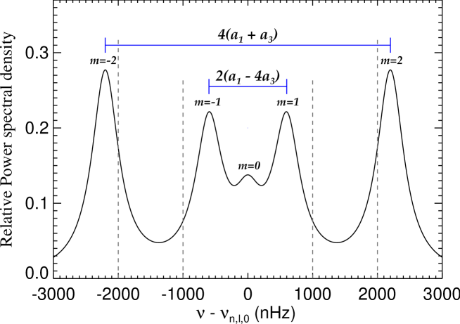
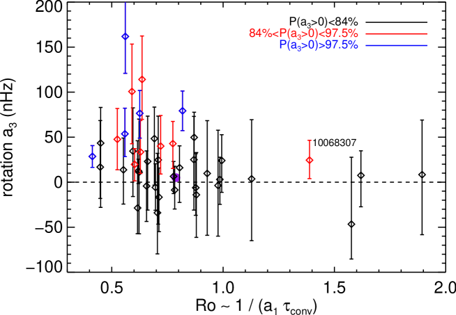
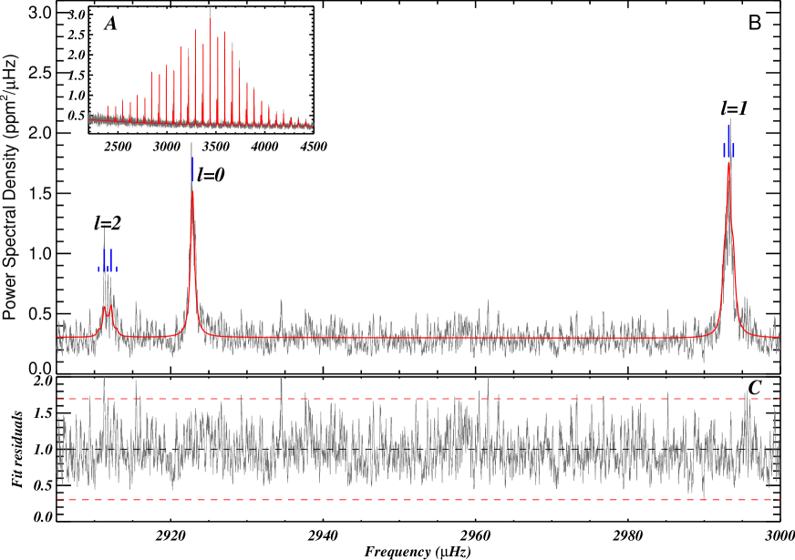
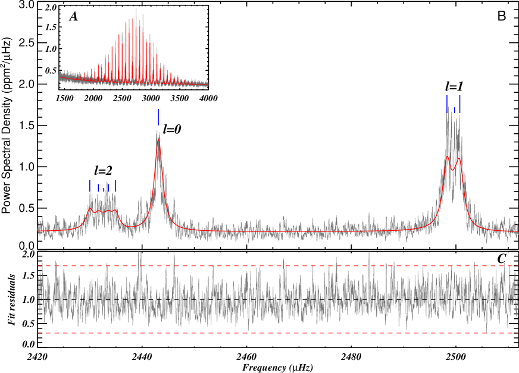
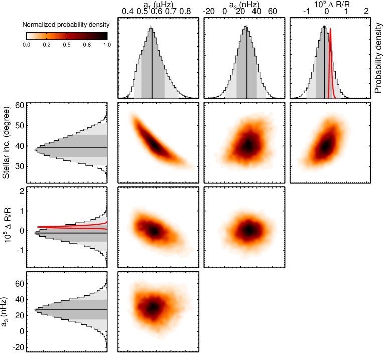
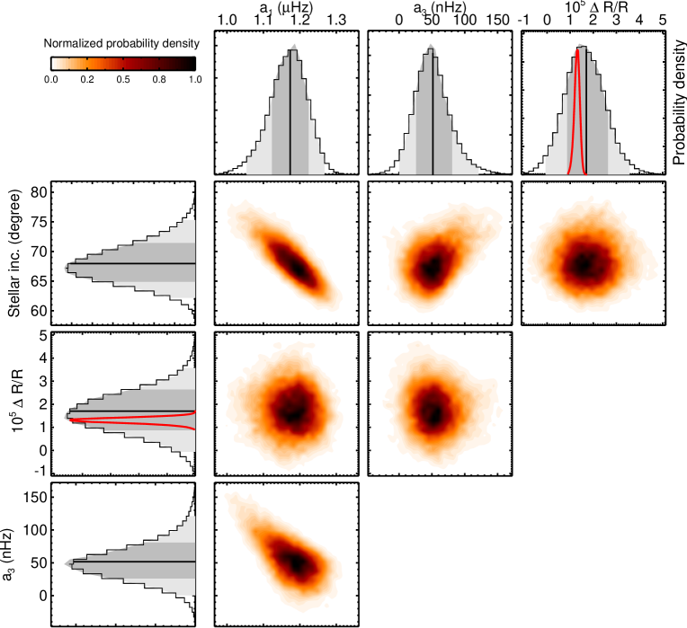
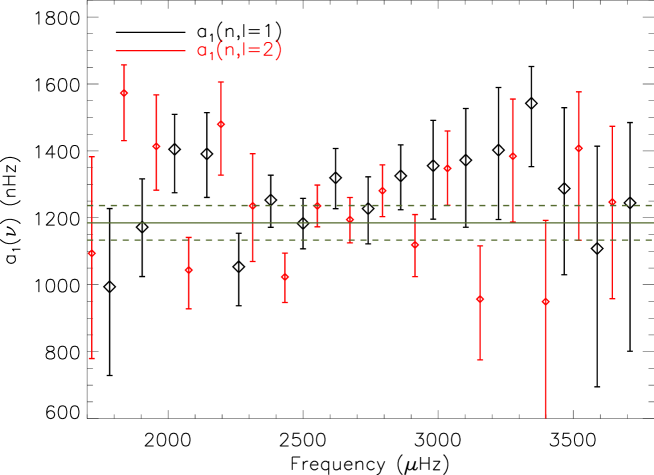
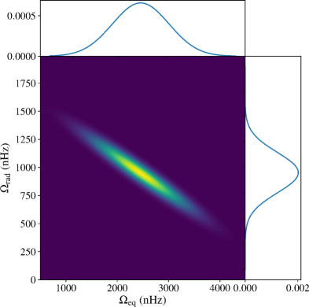
| KIC | HD | R.A. (deg) | Dec. (deg) | (nHz) | (nHz) | (%) |
|---|---|---|---|---|---|---|
| 003427720 | —— | 286.4386 | 38.52293 | |||
| 007871531 | —— | 282.9151 | 43.63609 | |||
| 009410862 | —— | 294.4862 | 45.96451 | |||
| 009098294 | —— | 295.0883 | 45.48915 | |||
| 007970740 | 186306 | 295.4402 | 43.74764 | |||
| 010454113 | 176153 | 284.1526 | 47.65641 | |||
| 006106415 | 177153 | 285.4153 | 41.49009 | |||
| 005950854 | —— | 288.7837 | 41.29874 | |||
| 012009504 | 234856 | 289.4409 | 50.48006 | |||
| 008938364 | —— | 285.5413 | 45.27761 | |||
| 007106245 | —— | 288.0094 | 42.67186 | |||
| 003656476 | —— | 294.2033 | 38.71578 | |||
| 008150065 | —— | 285.0289 | 44.02919 | |||
| 008760414 | —— | 294.4768 | 44.98445 | |||
| 010079226 | —— | 293.4699 | 47.04572 | |||
| 006933899 | —— | 286.7431 | 42.43562 | |||
| 004914923 | —— | 289.1454 | 40.04731 | |||
| 008394589 | 190166 | 300.4643 | 44.35391 | |||
| 008424992 | —— | 289.6384 | 44.40449 | |||
| 006603624 | —— | 291.0467 | 42.05270 | |||
| 011772920 | —— | 296.4415 | 49.98858 | |||
| 010516096 | —— | 282.3902 | 47.71106 | |||
| 007296438 | —— | 295.8723 | 42.88115 | |||
| 008179536 | —— | 296.3499 | 44.07664 | |||
| 008228742 | —— | 290.1997 | 44.15524 | |||
| 003735871 | —— | 288.0693 | 38.81768 | |||
| 007680114 | —— | 290.985 | 43.31459 | |||
| 010963065 | 176693 | 284.7862 | 48.42323 | |||
| 010068307 | —— | 288.9779 | 47.06124 | |||
| 005184732 | 182756 | 291.1264 | 40.32326 | |||
| 009965715 | —— | 297.3332 | 46.82664 | |||
| 009955598 | —— | 293.6792 | 46.85276 | |||
| 012258514 | 183298 | 291.592 | 50.98724 | |||
| 009025370 | 184401 | 293.0609 | 45.31069 | |||
| 009139151 | —— | 284.0886 | 45.51475 | |||
| 008379927 | 187160 | 296.6721 | 44.34853 | |||
| 008006161 | 173701 | 281.1465 | 43.83331 | |||
| 008694723 | —— | 293.9608 | 44.88052 | |||
| 006225718 | 187637 | 297.3256 | 41.58246 | |||
| 007510397 | 177412 | 285.6642 | 43.11748 |
| KIC | Z/X | Age (Gyr) | ||||
|---|---|---|---|---|---|---|
| 5184732 | 5896 | 0.05342 | 1.21 | 1.344 | 4.39 | 0.259 |
| 6225718 | 6299 | 0.02164 | 1.15 | 1.233 | 3.03 | 0.186 |
| 7510397 | 6148 | 0.04257 | 1.45 | 1.906 | 2.69 | 0.192 |
| 8006161 | 5445 | 0.04967 | 0.95 | 0.917 | 4.49 | 0.313 |
| 8694723 | 6105 | 0.01719 | 1.11 | 1.536 | 5.45 | 0.180 |
| 9025370 | 5485 | 0.03051 | 0.97 | 1.000 | 5.24 | 0.289 |
| 9139151 | 6319 | 0.02721 | 1.15 | 1.151 | 2.74 | 0.225 |
| 9955598 | 5431 | 0.02721 | 0.90 | 0.886 | 6.64 | 0.313 |
| 9965715 | 6157 | 0.01737 | 1.08 | 1.277 | 4.27 | 0.174 |
| 10068307 | 6404 | 0.04778 | 1.61 | 2.165 | 2.02 | 0.166 |
| 10963065 | 6147 | 0.02202 | 1.08 | 1.229 | 4.30 | 0.226 |
| 12258514 | 5918 | 0.02706 | 1.14 | 1.550 | 5.78 | 0.216 |
| 8379927 | 6184 | 0.02461 | 1.12 | 1.123 | 1.87 | 0.210 |
| KIC | (nHz) | (nHz) | ||
|---|---|---|---|---|
| 5184732 | ||||
| 6225718 | ||||
| 7510397 | ||||
| 8006161 | ||||
| 8379927 | ||||
| 8694723 | ||||
| 9025370 | ||||
| 9139151 | ||||
| 9955598 | ||||
| 9965715 | ||||
| 10068307 | ||||
| 10963065 | ||||
| 12258514 | ||||
| KIC | Version | Quarters | Obs. duration (days) | freq. resol. (nHz) |
|---|---|---|---|---|
| 003427720 | 1 | Q5.1-Q17.2 | 1147.53 | 10.1 |
| 003656476 | 1 | Q5.1-Q17.2 | 1147.53 | 10.1 |
| 003735871 | 1 | Q5.1-Q17.2 | 1147.53 | 10.1 |
| 004914923 | 1 | Q5.1-Q17.2 | 1147.53 | 10.1 |
| 005184732 | 1 | Q7.1-Q17.2 | 960.85 | 12.0 |
| 005950854 | 1 | Q5.1-Q10.3 | 556.80 | 20.8 |
| 006106415 | 2 | Q6.1-Q16.3 | 1018.53 | 11.4 |
| 006225718 | 1 | Q6.1-Q17.2 | 1051.57 | 11.0 |
| 006603624 | 1 | Q5.1-Q17.2 | 1147.53 | 10.1 |
| 006933899 | 1 | Q5.1-Q17.2 | 1147.53 | 10.1 |
| 007106245 | 1 | Q5.1-Q15.3 | 1027.67 | 11.3 |
| 007296438 | 3 | Q7.1-Q11.3 | 468.17 | 24.7 |
| 007510397 | 1 | Q7.1-Q17.2 | 960.84 | 12.0 |
| 007680114 | 1 | Q5.1-Q17.2 | 1147.53 | 10.1 |
| 007871531 | 1 | Q5.1-Q17.2 | 1147.53 | 10.1 |
| 007970740 | 1 | Q6.1-Q17.2 | 1051.57 | 11.0 |
| 008006161 | 1 | Q5.1-Q17.2 | 1147.53 | 10.1 |
| 008150065 | 1 | Q5.1-Q10.3 | 556.80 | 20.8 |
| 008179536 | 1 | Q5.1-Q11.3 | 654.86 | 17.7 |
| 008228742 | 1 | Q5.1-Q17.2 | 1147.53 | 10.1 |
| 008379927 | 2 | Q2.1-Q17.2 | 1421.50 | 8.1 |
| 008394589 | 1 | Q5.1-Q17.2 | 1147.53 | 10.1 |
| 008424992 | 1 | Q7.1-Q10.3 | 370.11 | 31.3 |
| 008694723 | 1 | Q5.1-Q17.2 | 1147.53 | 10.1 |
| 008760414 | 1 | Q5.1-Q17.2 | 1147.53 | 10.1 |
| 008938364 | 1 | Q6.1-Q17.2 | 1051.57 | 11.0 |
| 009025370 | 1 | Q5.1-Q17.2 | 1147.53 | 10.1 |
| 009098294 | 1 | Q5.1-Q17.2 | 1147.53 | 10.1 |
| 009139151 | 1 | Q5.1-Q17.2 | 1147.53 | 10.1 |
| 009410862 | 1 | Q5.1-Q15.3 | 1027.67 | 11.3 |
| 009955598 | 5 | Q5.1-Q17.2 | 1147.53 | 10.1 |
| 009965715 | 1 | Q5.1-Q13.3 | 829.59 | 13.9 |
| 010068307 | 1 | Q7.1-Q17.2 | 960.85 | 12.0 |
| 010079226 | 1 | Q7.1-Q10.3 | 370.11 | 31.3 |
| 010454113 | 1 | Q5.1-Q17.2 | 1147.53 | 10.1 |
| 010516096 | 1 | Q5.1-Q17.2 | 1147.53 | 10.1 |
| 010963065 | 5 | Q2.3-Q17.2 | 1359.65 | 8.5 |
| 011772920 | 1 | Q5.1-Q17.2 | 1147.53 | 10.1 |
| 012009504 | 1 | Q5.1-Q17.2 | 1147.53 | 10.1 |
| 012258514 | 1 | Q5.1-Q17.2 | 1147.53 | 10.1 |